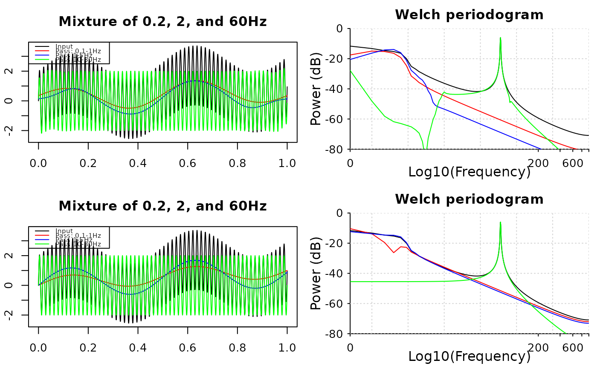

Band-pass signals
Arguments
- x
input signals, numeric vector or matrix.
xmust be row-major if input is a matrix: each row is a channel, and each column is a time-point.- sample_rate
sampling frequency
- lb
lower frequency bound of the band-passing filter, must be positive
- ub
upper frequency bound of the band-passing filter, must be greater than the lower bound and smaller than the half of sampling frequency
- domain
1 if
xis in time-domain, or 0 ifxis in frequency domain- ...
ignored
- order
the order of the filter, must be positive integer and be less than one-third of the sample rate
- method
filter type, choices are
'fir'and'butter'- direction
filter direction, choices are
'forward','backward', and'both'directions- window
window type, can be a character, a function, or a vector. For character,
windowis a function name in thesignalpackage, for example,'hanning'; for a function,windowtakes one integer argument and returns a numeric vector with length of that input; for vectors,windowis a numeric vector o lengthorder+1.
Examples
t <- seq(0, 1, by = 0.0005)
x <- sin(t * 0.4 * pi) + sin(t * 4 * pi) + 2 * sin(t * 120 * pi)
par(mfrow = c(2, 2), mar = c(3.1, 2.1, 3.1, 0.1))
# ---- Using band_pass1 ------------------------------------------------
y1 <- band_pass1(x, 2000, 0.1, 1)
y2 <- band_pass1(x, 2000, 1, 5)
y3 <- band_pass1(x, 2000, 10, 80)
plot(t, x, type = 'l', xlab = "Time", ylab = "",
main = "Mixture of 0.2, 2, and 60Hz")
lines(t, y1, col = 'red')
lines(t, y2, col = 'blue')
lines(t, y3, col = 'green')
legend(
"topleft", c("Input", "Pass: 0.1-1Hz", "Pass 1-5Hz", "Pass 10-80Hz"),
col = c(par("fg"), "red", "blue", "green"), lty = 1,
cex = 0.6
)
# plot pwelch
pwelch(x, fs = 2000, window = 4000, noverlap = 2000, plot = 1)
pwelch(y1, fs = 2000, window = 4000, noverlap = 2000,
plot = 2, col = "red")
pwelch(y2, fs = 2000, window = 4000, noverlap = 2000,
plot = 2, col = "blue")
pwelch(y3, fs = 2000, window = 4000, noverlap = 2000,
plot = 2, col = "green")
# ---- Using band_pass2 with FIR filters --------------------------------
order <- floor(2000 / 3)
z1 <- band_pass2(x, 2000, 0.1, 1, method = "fir", order = order)
z2 <- band_pass2(x, 2000, 1, 5, method = "fir", order = order)
z3 <- band_pass2(x, 2000, 10, 80, method = "fir", order = order)
plot(t, x, type = 'l', xlab = "Time", ylab = "",
main = "Mixture of 0.2, 2, and 60Hz")
lines(t, z1, col = 'red')
lines(t, z2, col = 'blue')
lines(t, z3, col = 'green')
legend(
"topleft", c("Input", "Pass: 0.1-1Hz", "Pass 1-5Hz", "Pass 10-80Hz"),
col = c(par("fg"), "red", "blue", "green"), lty = 1,
cex = 0.6
)
# plot pwelch
pwelch(x, fs = 2000, window = 4000, noverlap = 2000, plot = 1)
pwelch(z1, fs = 2000, window = 4000, noverlap = 2000,
plot = 2, col = "red")
pwelch(z2, fs = 2000, window = 4000, noverlap = 2000,
plot = 2, col = "blue")
pwelch(z3, fs = 2000, window = 4000, noverlap = 2000,
plot = 2, col = "green")
